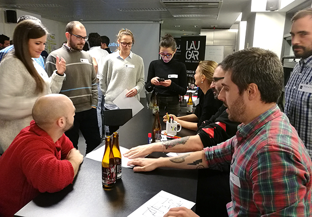
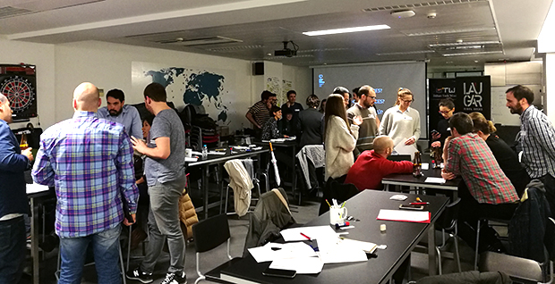
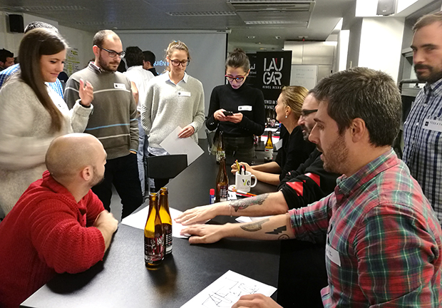
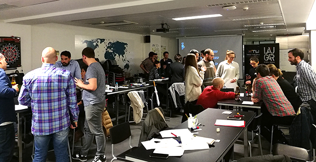

5º Taller celebrado el 09 / 11 / 17
¡No siento los clics!

 



Es CEO y Responsable de UX en Unexpendables, pero no siempre fue así. Desde 1.998 ha estado trabajando en el mundo del diseño digital siendo Responsable de Usabilidad en compañías como Panda Security o Sher.pa, donde ha podido diseñar productos y servicios que utilizan todos los días millones de usuarios en todo el mundo.
Desde 2012 vive la aventura de capitanear su propio estudio “Unexpendables”, en el que diseñan cosas que van desde las pantallas con las que se conducen los trenes a la intranet del Ajuntament de Barcelona. Trabajando para clientes de primer orden como BBK, Bankia, EDP, Orona, Ajuntament de Barcelona, Caja Rural, Panda Security y otros muchos.
De vez en cuando participa también en congresos como AdobeLink, UX Spain o Experience Fighters.